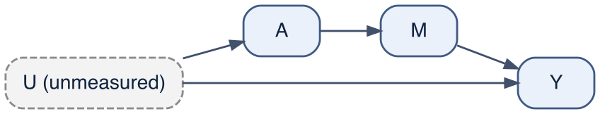
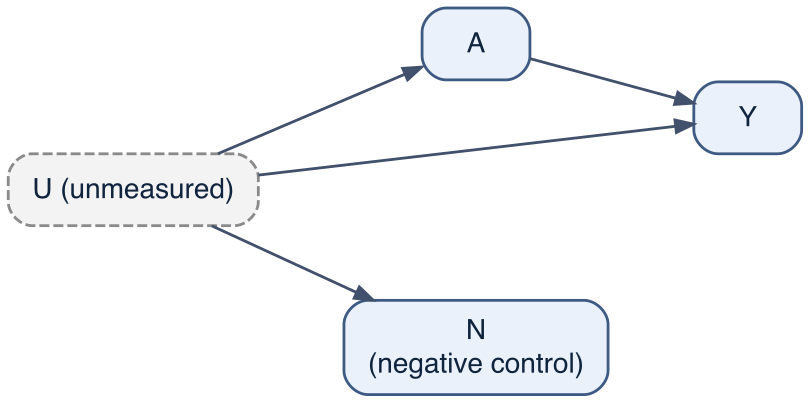
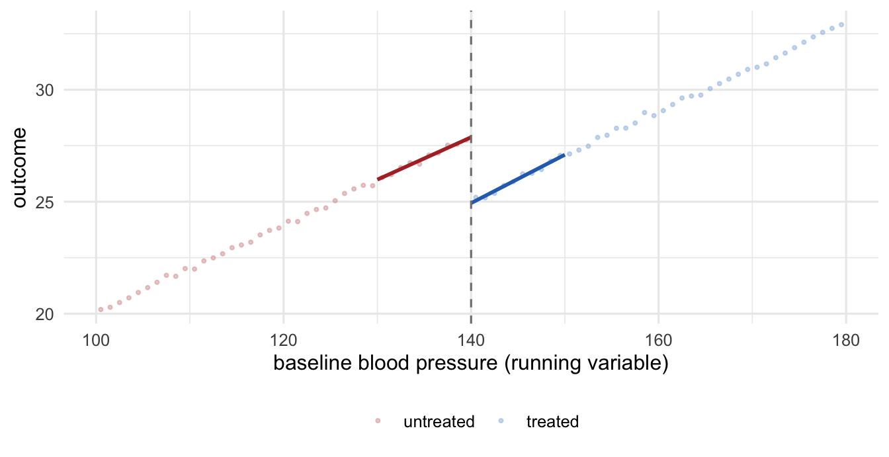
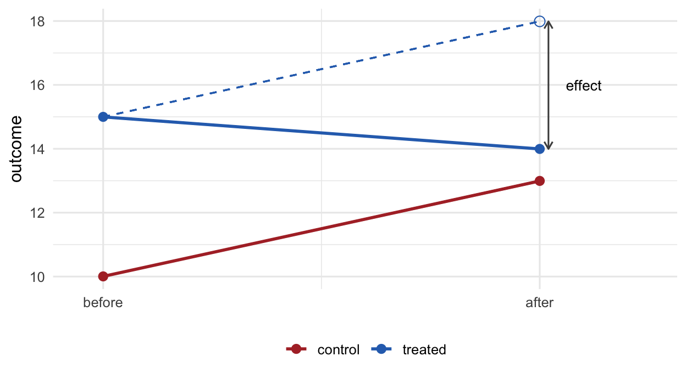

19 The quasi-experimental zoo
The previous chapter, Chapter 18, found a causal effect without measuring the confounders by exploiting a variable — the instrument — that created treatment variation as good as randomised. That is one instance of a general strategy: when adjustment is impossible because a confounder is unmeasured, look instead for a feature of how the data arose that mimics an experiment, and reason from it. This chapter surveys four such designs — the front-door criterion, negative controls, regression discontinuity, and difference-in-differences.
Each design buys identification not by measuring confounders but by exploiting structure, and each rests on a different assumption the data cannot fully verify: that a mediator carries the whole effect; that a control variable has no real effect; that nothing else changes at a threshold; that two groups would have moved in parallel. The four are demonstrated on minimal simulations rather than on the master cohort, because each needs a particular structure the cohort does not supply — the cohort’s blood-pressure mediator, for instance, has both a direct drug effect around it and a confounder feeding into it, so it fails the front-door criterion below. Isolating each assumption in its own small world is the point. The one structure the cohort does supply, the hospitalisation collider of Chapter 12, returns in the negative-control section.
19.1 Front door: identification through a clean mediator
The instrument of Chapter 18 sat upstream of treatment. The front-door criterion uses a variable downstream of it: a mediator M that carries the entire effect of A on Y. If A reaches Y only through M, if nothing confounds the A -> M relationship, and if the M -> Y relationship is confounded only by A itself, then the effect of A on Y can be assembled from two pieces that are each identified, even though A and Y share an unmeasured confounder.1
The logic is a chain. The effect of A on M is clean, because the confounder does not touch M. The effect of M on Y is recovered by conditioning on A, which blocks the only back-door path M <- A <- U -> Y. The product of the two is the effect of A on Y. In a minimal linear world the truth is the product of the two coefficients.
set.seed(1); n <- 1e5
U <- rnorm(n)
A <- rbinom(n, 1, plogis(1.2 * U)) # treatment, confounded by U
M <- 2.0 * A + rnorm(n) # A -> M (coefficient 2.0); U does not enter
Y <- 1.5 * M + 3.0 * U + rnorm(n) # M -> Y (1.5), U -> Y; no direct A -> Y
beta <- coef(lm(M ~ A))["A"] # effect of A on M (clean: U absent)
gamma <- coef(lm(Y ~ M + A))["M"] # effect of M on Y, conditioning on A
crude_fd <- coef(lm(Y ~ A))["A"] # confounded by U
c(truth = 2.0 * 1.5, crude = crude_fd, front_door = beta * gamma) truth crude.A front_door.A
3.000000 5.826281 3.024343 The crude regression of Y on A returns about 5.8 — far from the truth of 3, contaminated by the unmeasured U. The front-door estimate, the product of the two clean pieces, is 3.02. It recovered the effect without ever measuring the confounder, just as the instrument did, but through a downstream mediator rather than an upstream cause.
The criterion’s strength is also its fragility: the mediator must carry the whole effect. If any of A’s effect on Y bypasses M — a direct arrow A -> Y — the front-door estimate captures only the mediated part.
Yd <- 1.5 * M + 3.0 * U + 4.0 * A + rnorm(n) # add a direct effect of A on Y (4.0)
c(truth = 2.0 * 1.5 + 4.0, # mediated (3) + direct (4) = 7
front_door = coef(lm(M ~ A))["A"] * coef(lm(Yd ~ M + A))["M"]) truth front_door.A
7.000000 3.026478 With a direct path, the true effect is 7 but the front-door estimate still reports only the mediated 3. This is why the cohort’s blood pressure cannot serve: the drug has a direct effect on stroke as well as a mediated one (Chapter 16), and severity feeds into blood pressure, so neither front-door condition holds.
19.2 Negative controls: detecting the bias you cannot remove
A negative control is a variable for which the true effect is known to be zero, chosen so that it carries the same confounding as the real analysis. If the analysis is unconfounded, the negative control should show no association; if it shows one, that association is bias, made visible.2 There are two kinds: a negative-control outcome, not caused by the exposure, and a negative-control exposure, which does not cause the outcome. The simulation demonstrates both kinds; the master cohort then supplies a real collider.

set.seed(2); n <- 1e5
U <- rnorm(n)
Uobs <- U + rnorm(n, 0, 0.7) # a noisy measured proxy for the confounder
A <- rbinom(n, 1, plogis(1.0 * U))
Y <- 0.5 * A + 2.0 * U + rnorm(n) # true effect of A on Y is 0.5
N <- 2.0 * U + rnorm(n) # negative-control outcome: U -> N, NO A -> N (truth 0)
E <- rbinom(n, 1, plogis(1.0 * U)) # negative-control exposure: U -> E, NO E -> Y (truth 0)
crude_AY <- coef(lm(Y ~ A))["A"]; crude_AN <- coef(lm(N ~ A))["A"]; crude_EY <- coef(lm(Y ~ E))["E"]
adj_AY <- coef(lm(Y ~ A + Uobs))["A"]; adj_AN <- coef(lm(N ~ A + Uobs))["A"]; adj_EY <- coef(lm(Y ~ E + Uobs))["E"]
rbind(crude = c(A_on_Y = crude_AY, A_on_N = crude_AN, E_on_Y = crude_EY),
adjust_proxy = c(A_on_Y = adj_AY, A_on_N = adj_AN, E_on_Y = adj_EY)) A_on_Y.A A_on_N.A E_on_Y.E
crude 2.166902 1.6537868 1.7454248
adjust_proxy 1.121004 0.6058986 0.6460028The true effect of A on Y is 0.5, but the crude estimate is about 2.2 — inflated by U. We cannot see that inflation directly, because U is unmeasured and the true effect is unknown in practice. The negative control makes it visible: A does not cause N, yet the crude A-on-N association is 1.65, far from zero. That non-zero number is a direct readout of the confounding. Adjusting for the noisy proxy Uobs pulls the negative-control association to 0.61, and the real estimate moves toward 0.5 in step — the negative control tracks the residual bias as we control it. The negative-control exposure E, which shares A’s confounder but has no effect on Y, tells the same story from the other side: its crude association with Y, 1.75, is confounding and nothing else, and the proxy adjustment pulls it to 0.65.
19.2.1 The cohort’s collider, and what a negative control can and cannot see
The same device detects bias that is not confounding, with a qualification the master cohort makes concrete. Its hospitalised column is a common effect of the drug and stroke (Chapter 12): an analysis restricted to hospitalised patients conditions on a collider, and that opens a path between drug and stroke that has nothing to do with the drug’s effect.
df <- simulate_cohort(n = N_COHORT, seed = 2024)
df$age_c <- (df$age - 62) / 10
hosp <- df[df$hospitalised == 1, ] # restricting to the hospitalised
adj_rr <- function(d) # adjusted risk ratio for the drug
exp(coef(glm(stroke ~ drug + severity + age_c + diabetes, poisson, d))["drug"])
c(truth = cohort_truth(df)$ATE_RR, all = unname(adj_rr(df)), hospitalised = unname(adj_rr(hosp))) truth all hospitalised
0.6000866 0.6127451 0.3697620 Adjusting for the confounders recovers the risk ratio in the whole cohort, 0.613 against a true 0.6, and fails among the hospitalised, 0.37: the same adjustment set, a different population, and a bias no covariate blocks because the restriction itself created it. Now take a negative-control outcome the cohort supplies: the patient’s age. The drug cannot change anyone’s age, so any drug–age association is bias.
nc_age <- function(d, adjust = TRUE) {
f <- if (adjust) age ~ drug + severity + diabetes else age ~ drug
m <- lm(f, data = d)
c(estimate = unname(coef(m)["drug"]), confint(m)["drug", ])
}
rbind(crude_all = nc_age(df, adjust = FALSE),
adjusted_all = nc_age(df),
adjusted_hospitalised = nc_age(hosp)) estimate 2.5 % 97.5 %
crude_all 4.90047017 4.7172081 5.0837322
adjusted_all 0.04783247 -0.1526158 0.2482808
adjusted_hospitalised -0.22357876 -0.5968601 0.1497026Crudely, treated patients are 4.9 years older than untreated: the confounding by indication of Chapter 13, read off a variable the drug cannot have touched. Adjusting for severity and diabetes brings the negative control to 0.05 years, which is the adjustment set passing a test the drug–stroke analysis cannot administer to itself. Among the hospitalised the adjusted negative control moves to -0.22 years, in the direction the collider predicts, but its interval (-0.6 to 0.15) still covers zero. That is the qualification: a negative control detects only the bias it shares, and age shares the collider’s path with stroke only through the direct age–stroke arrow, which is weak once severity is held fixed. The distortion of the drug–stroke risk ratio among the hospitalised is large; the signal the negative control gives of it is faint. Choosing a negative control is therefore a question about the graph — which of the paths that bias the real analysis does the control variable also lie on — and not a search for any variable the exposure cannot affect. Negative controls do not remove bias; they reveal the part of it they share and, with stronger assumptions, can calibrate it away.
19.3 Regression discontinuity: randomisation at a threshold
When treatment is assigned by a sharp rule — treat everyone whose score on a continuous variable, the running variable, crosses a cutoff — the units just below and just above the threshold are practically indistinguishable except for treatment. Across that narrow band, treatment is as good as randomised, and the jump in the outcome at the cutoff estimates the treatment effect for units at the threshold.3 Suppose a guideline prescribes the drug to every patient whose baseline blood pressure reaches 140.
set.seed(3); n <- 2e5
X <- runif(n, 100, 180); cutoff <- 140
A <- as.integer(X >= cutoff) # the guideline: treat at/above 140
tau <- -3 # true local effect of treatment
Y <- 0.2 * X + tau * A + rnorm(n, 0, 5) # X confounds (higher X -> higher Y) and triggers A
h <- 10 # bandwidth around the cutoff
L <- lm(Y ~ X, subset = X >= cutoff - h & X < cutoff)
R <- lm(Y ~ X, subset = X >= cutoff & X <= cutoff + h)
jump <- predict(R, data.frame(X = cutoff)) - predict(L, data.frame(X = cutoff))
crude_rdd <- mean(Y[A == 1]) - mean(Y[A == 0])
c(truth = tau, crude = crude_rdd, RDD = unname(jump)) truth crude RDD
-3.000000 5.030692 -2.939437 The crude treated-versus-untreated comparison is 5, the wrong sign: treated patients have higher blood pressure and so higher risk for reasons unrelated to the drug. The discontinuity at the cutoff strips that away. The two lines are fitted within a bandwidth of 10 mmHg on either side of the cutoff, the window inside which patients are taken to be comparable. Because the confounding function is smooth through 140, the only thing that changes abruptly there is treatment, so the vertical gap between the two fitted lines at the cutoff is the effect: -2.94 against a true -3.

The design rests on nothing else changing at the cutoff. If a second intervention shares the threshold — another drug also started at 140 — the jump mixes the two effects, and regression discontinuity cannot separate them.
Yb <- 0.2 * X + 6 * (X >= cutoff) + tau * A + rnorm(n, 0, 5) # a second jump of +6 at 140
Lb <- lm(Yb ~ X, subset = X >= cutoff - h & X < cutoff)
Rb <- lm(Yb ~ X, subset = X >= cutoff & X <= cutoff + h)
rdd_b <- unname(predict(Rb, data.frame(X = cutoff)) - predict(Lb, data.frame(X = cutoff)))
c(truth = tau, RDD = rdd_b) truth RDD
-3.000000 2.929691 A co-occurring jump of +6 turns the estimate positive: the design reports the total discontinuity, 2.9, and attributes all of it to the drug. The same failure occurs if patients can manipulate their score to land on the favourable side of the cutoff, because then the two sides differ in more than treatment.
19.4 Difference-in-differences: removing what stays fixed and what moves together
When a treatment reaches one group at a known time and spares another, two comparisons are each confounded. Comparing the groups after treatment confounds the effect with whatever made the groups differ to begin with; comparing the treated group before and after confounds it with whatever changed over time for everyone. Differencing twice removes both: the treated group’s before-to-after change, minus the control group’s before-to-after change, cancels the fixed group difference and the common time trend, leaving the effect.4
set.seed(4); n <- 50000
a <- 10; grp <- 5; trend <- 3; tau <- -4
control_before <- rnorm(n, a, 2)
control_after <- rnorm(n, a + trend, 2) # time trend only
treated_before <- rnorm(n, a + grp, 2) # group is higher at baseline
treated_after <- rnorm(n, a + grp + trend + tau, 2) # group + trend + treatment effect
crude_after <- mean(treated_after) - mean(control_after) # confounded by the group gap
before_after <- mean(treated_after) - mean(treated_before) # confounded by the time trend
did <- (mean(treated_after) - mean(treated_before)) -
(mean(control_after) - mean(control_before))
c(truth = tau, crude_after = crude_after, before_after = before_after, diff_in_diff = did) truth crude_after before_after diff_in_diff
-4.000000 1.001147 -1.003867 -3.992923 The after-only comparison, 1, has the wrong sign, swamped by the treated group’s higher baseline; the before-after comparison within the treated group, -1, is contaminated by the common upward trend. The difference-in-differences cancels both: -3.99 against a true -4.

The dashed counterfactual is only right if the treated group would have moved in parallel with the control group absent treatment. That is the parallel-trends assumption, and it is untestable, because the treated group’s untreated after-value is never seen. When it fails — when the groups were on different trajectories anyway — the difference-in-differences absorbs the trend gap into the effect.
set.seed(5)
treated_after2 <- rnorm(n, a + grp + (trend + 3) + tau, 2) # treated trend is +3 steeper
did2 <- (mean(treated_after2) - mean(treated_before)) - # reuse the other three cells
(mean(control_after) - mean(control_before))
c(truth = tau, diff_in_diff = did2) truth diff_in_diff
-4.0000000 -0.9940338 When the treated group would have risen 3 units faster regardless of treatment, the estimate is about -1 instead of −4: the trend difference is misread as a treatment effect. A common diagnostic is to check that the groups were parallel before treatment, but pre-treatment parallelism does not guarantee it would have continued.
19.4.1 Two-way fixed effects, and the main effects they absorb
The two-group, two-period comparison above is the smallest case of a regression with two-way fixed effects: an indicator for every unit and every period, and the product treated:post for the policy. Written that way the formula looks as though it omits the main effects of treated and post, which Chapter 24 warns is usually an error. Here it is not, and the reason is worth seeing, because it recurs in matched and self-controlled designs. The formula looks non-hierarchical but marginality is not violated: the marginal terms are present, having been absorbed by the stratum indicators. Including them explicitly adds no information, only collinear columns.
Consider a state-level policy — a Medicaid expansion adopted by half the states — with outcomes measured before and after:
set.seed(3)
units <- 100
panel <- expand.grid(unit = factor(1:units), time = factor(1:2))
panel$treated <- as.integer(as.integer(panel$unit) <= units / 2)
panel$post <- as.integer(as.integer(panel$time) == 2)
panel$y <- 1 + 0.5 * panel$treated + 0.7 * panel$post +
1.2 * panel$treated * panel$post + rnorm(nrow(panel), sd = 0.3)
X_hier <- model.matrix(~ treated * post + unit + time, panel) # "hierarchical"
X_int <- model.matrix(~ treated:post + unit + time, panel) # interaction only
m_hier <- lm(y ~ treated * post + unit + time, data = panel)
m_int <- lm(y ~ treated:post + unit + time, data = panel)
data.frame(specification = c("treated * post + unit + time", "treated:post + unit + time"),
columns = c(ncol(X_hier), ncol(X_int)),
rank = c(qr(X_hier)$rank, qr(X_int)$rank)) specification columns rank
1 treated * post + unit + time 104 102
2 treated:post + unit + time 102 102isTRUE(all.equal(fitted(m_hier), fitted(m_int))) # identical fits?[1] TRUEround(coef(m_int)[["treated:post"]], 3) # the DiD estimate; truth 1.2[1] 1.156The “hierarchical” specification has two more columns than the interaction-only one and the same rank: treated is a function of the unit indicators and post of the time indicators, so the two extra columns add nothing. R drops two aliased columns and returns NA for them, and which two depends on the order of terms in the formula: written as above it drops one unit and one time indicator, whereas y ~ unit + time + treated * post drops treated and post themselves. The fitted values are the same in every case, which is the reminder that the deficiency is a property of the design and not of the syntax. The difference-in-differences estimate is near its generating value of 1.2 either way.
The same structure appears wherever a conditional likelihood eliminates within-stratum constants:
- Matched case–control studies and conditional logistic regression. Anything constant within a matched set drops out of the conditional likelihood. If the study matched on sex, the sex main effect is inestimable — but
exposure:sexis perfectly estimable, and is the standard way to report effect modification by a matching variable. - Case-crossover designs. Each person serves as their own control, so every time-invariant characteristic — genotype, sex, chronic comorbidity — is differenced out. Its interaction with the time-varying exposure survives.
This is a good teaching case, because it shows that the rule about main effects is about identification and not about formula syntax. Nobody has asserted that sex does not affect the outcome; the design has made that question unanswerable, and the formula reflects the design.
19.5 What the zoo has in common
The four designs differ in mechanism but share a logic. None measures the confounder; each substitutes an assumption about structure — a mediator that carries the whole effect, a control with no real effect, continuity at a threshold, parallel trends — for the no-unmeasured-confounding assumption that adjustment requires. Each assumption is largely untestable, and each design, as the broken versions showed, fails when its assumption fails, often without any visible sign in the output. Most deliver a local or conditional estimand (the effect at a threshold, in the compliers, mediated through M) rather than the population average. They are valuable where adjustment is hopeless, but they move the burden of the analysis from measuring variables to defending an assumption — which is an argument about the subject matter, not a calculation. The sensitivity analysis of Chapter 20 asks, for each, how far the assumption can bend before the conclusion breaks, and with that question Part IV closes.
19.6 Key points
- Quasi-experimental designs identify effects without measuring the confounders, by exploiting structure in how the data arose, in the spirit of the instrumental variable of Chapter 18.
- Front door: if a mediator carries the entire effect and is itself unconfounded, the effect is the product of the (clean)
A -> MandM -> Ypieces. It fails if any effect bypasses the mediator. - Negative controls: a variable with a known zero effect that shares the bias reveals the part of it it shares — confounding, or selection through a collider — that cannot otherwise be seen. Choosing one is a question about the graph; they detect bias and do not by themselves remove it.
- Regression discontinuity: treatment assigned by a threshold is as good as randomised near the cutoff, so the jump in the outcome estimates the effect for units at the threshold. It fails if anything else changes at the cutoff or if the score is manipulated.
- Difference-in-differences: double differencing removes fixed group differences and common time trends. It rests on parallel trends, which is untestable and not implied by pre-treatment parallelism.
- Two-way fixed effects absorb the main effects of group and period into the unit and time indicators, so a formula with only the
treated:postproduct is not non-hierarchical; the same absorption is why matched and self-controlled designs cannot estimate a main effect of a matching variable but can estimate its interaction with the exposure. - All four trade the unverifiable assumptions of adjustment for different unverifiable assumptions, and most estimate local effects rather than the population average.
19.7 Exercises
Front-door with confounded mediator. Add an arrow from
UintoMin the front-door simulation (letMdepend onUas well asA). Does the front-door estimate still recover the truth? Which of the criterion’s conditions has been broken, and why does it matter?Calibrate with a negative control. Extend the negative-control simulation so that the measured proxy
Uobsis a better or worse measure ofU(change its noise). Plot the negative-control association and the bias in theA-on-Yestimate against the proxy’s quality. How tightly does the negative control track the real bias?Bandwidth in RDD. Re-estimate the regression-discontinuity effect with bandwidths of 2, 5, 10 and 20. How does the estimate, and its precision, change? Explain the bias–variance trade-off between a narrow window (cleaner comparison, fewer patients) and a wide one.
A pre-trend test for DiD. Add a third, pre-treatment period to the difference-in-differences simulation. Under the parallel version and the non-parallel version, check whether the two groups moved in parallel before treatment. Show that a passed pre-trend test does not guarantee the assumption holds in the treatment period.
Conceptual. For each of the four designs, name the single assumption that does the identifying work, state whether any part of it can be examined in the data, and give one real study setting in which the design would be appropriate.
A better negative control. In the cohort, age is a weak negative control for the hospitalisation collider because it reaches stroke only through a direct arrow that is small once severity is fixed. Using the structural equations in
R/simulate_cohort.R, propose a variable that would share more of the collider’s path, add it to a copy of the simulation, and show that it flags the selection bias more clearly. Say what this implies for finding negative controls in real data, where the graph is not written down.
Pearl J, “Causal diagrams for empirical research,” Biometrika 1995;82:669-688 (DOI). For a worked epidemiological application of the front-door criterion, see Wang J, Ferguson EL, Chen R, et al., “COVID-19 related brain MRI changes and anticipated long-term dementia risk: A front-door-criterion-inspired approach,” Ann Epidemiol 2026;116:110054 (DOI).↩︎
Lipsitch M, Tchetgen Tchetgen E, Cohen T, “Negative controls: a tool for detecting confounding and bias in observational studies,” Epidemiology 2010;21:383-388 (DOI).↩︎
Bor J, Moscoe E, Mutevedzi P, Newell ML, Bärnighausen T, “Regression discontinuity designs in epidemiology: causal inference without randomized trials,” Epidemiology 2014;25:729-737 (DOI).↩︎
Dimick JB, Ryan AM, “Methods for evaluating changes in health care policy: the difference-in-differences approach,” JAMA 2014;312:2401-2402 (DOI).↩︎